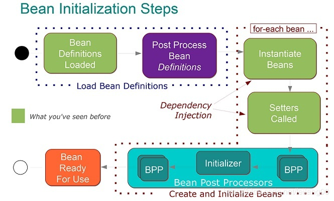

Spring是Java企业版应用程序开发中使用最广泛的框架.Spring的核心功能可用于开发任何Java应用程序。
我们可以使用它的扩展来在Java EE平台上构建各种Web应用程序，或者我们可以在简单的独立应用程序中使用它的依赖注入。
Spring旨在简化Java EE开发。以下是使用它的优点：
依赖注入是控制反转（IoC）的一个方面，它是一个通用概念，表明您不是手动创建对象，而是描述应如何创建它们。如果需要，IoC容器将实例化所需的类。
存在一些不同的选择：
可以使用XML文件或注释完成配置。
建议的方法是使用构造函数参数用于强制依赖项，将setter用于可选依赖项。构造函数注入允许将值注入不可变字段并使测试更容易。
BeanFactory 是一个表示提供和管理bean实例的容器的接口。默认实现在调用 getBean() 时实例化bean 。
ApplicationContext 是一个接口，表示容纳应用程序中所有信息，元数据和bean的容器。它还扩展了 BeanFactory 接口，但默认实现在应用程序启动时立马实例化bean。可以为单个bean覆盖此行为。
Spring Bean是由Spring IoC容器初始化的Java对象。
默认情况下，Spring Bean初始化为单例 。
要设置Spring Bean的范围，我们可以在XML配置文件中使用 Scope 注释或“Scope”属性。
有五个支持的范围：
不，单例bean不是线程安全的，因为线程安全是关于执行的，而单例是一种专注于创建的设计模式。线程安全仅取决于bean实现本身。
首先，需要基于Java或XML bean定义来实例化Spring bean。可能还需要执行一些初始化以使其进入可用状态。之后，当不再需要bean时，它将从IoC容器中删除。
所有初始化方法的整个循环显示在下图上：

这是以类型安全的方式配置基于Spring的应用程序的方法之一。它是基于XML的配置的替代方案。
可以，在大型项目中，建议使用多个Spring配置以提高可维护性和模块性。
您可以加载多个Java注解的配置：
@Configuration
@Import({MainConfig.class, SchedulerConfig.class})
public class AppConfig {或者加载一个包含所有其他配置的XML文件：
ApplicationContext context = new ClassPathXmlApplicationContext("spring-all.xml");在XML文件中你也可以包含其它配置文件：
<import resource="main.xml"/>
<import resource="scheduler.xml"/>Spring Security是Spring框架的一个独立模块，专注于在Java应用程序中提供身份验证和授权方法。它还会处理大多数常见的安全漏洞，例如CSRF攻击。
要在Web应用程序中使用Spring Security，您可以开始使用简单的注解：@EnableWebSecurity。
Spring Boot是一个项目，它提供了一组预先配置的框架，以减少用户的配置，以便您可以使用最少量的代码启动并运行Spring应用程序。
“不积跬步，无以至千里”，希望未来的你能：有梦为马 随处可栖！加油，少年！
关注公众号:「Java 知己」，每天更新Java知识哦，期待你的到来！